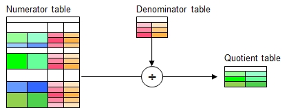

Function Names
table divide, table divide selected rowsDescription
A relational division will be made from two tables referred as dividend (numerator) and divisor (denominator). A new table called quotient will be generated.
The dividend (numerator) table contains a set of headers C = A + B where
A refers to a set of headers which are not found in the divisor (denominator), and
B refers to a set of headers which are found in the divisor (B').
The divisor table does not contain header names which are not found in the dividend table, meaning that both sets B and B' must contain the same headers.
Ordering does not matter.
The resulting quotient table will contain columns with headers A' which are the same headers as in set A in the dividend table.
Briefly said: From the dividend table, pick all entries with common headers A, which match with all rows in the divisor table.

Call as: procedure
Restrictions
Indirect parameter passing is disabled
Parameter count
4-6
Parameters
| No. | Type | Description |
|---|---|---|
| Opt. 1. code |
expression :literal |
Expression to select rows Applicable to function table divide selected rows only, affecting the numerator table. |
| 1. / 2. input |
literal | Name of existing numerand (dividend) table The table will not be modified by this function |
| 2. / 3. input |
literal | Name of existing denominator (divisor) table The table will not be modified by this function |
| 3. / 4. input |
literal | Name of quotient table This table will be created. |
| Opt 4. / 5. input |
table columns | Numerator columns Select the columns in the dividend (numerator) table to be used for the actual division process. This feature drops the need for extracting a dedicated dividend
table with the chosen columns to be used for division process.
|
| Opt 5. / 6. input |
table columns | Categorization columns Specifing categorization columnns allows to do multiple division runs with different categories as specified as set of 1 or more headers this parameter.
As an example if a country name is specified, then the division process will be repeated for all countries, and the quotient table contains an additional column
at the left listing the country name in one of the examples shown below.
|
Simple example
The following example does actually scan the numerator table for common parents of both children called Maria and Sabine (note: Age must also match). Actually, function divide answers the question on: "Find all parents (father and mother) who have two children, one called Maria and 4 years old, and the other one called Sabine, 2 years old. Two parents will be identified.
Code
table initialize( numerator,
{ { Father, Mother, Child, Age },
{ Franz, Helga, Harald, 5 },
{ Franz, Helga, Maria, 4 }, // No match - different parents
{ Franz, Ursula, Sabine, 2 }, // "
{ Moritz, Melanie, Gertrud, 7 },
{ Moritz, Melanie, Maria, 4 }, // Match
{ Moritz, Melanie, Sabine, 2 }, // Match
{ Peter, Lisa, Robert, 9 },
{ Johann, Lisa, Maria, 4 }, // Match
{ Johann, Lisa, Sabine, 2 } // Match
} );
table initialize( denominator,
{ { Child, Age },
{ Maria, 4 },
{ Sabine, 2 } } );
table divide( numerator, denominator, quotient );
table list( quotient );Two parent couples have been identified
0 : Father | Mother
1 : Moritz | Melanie
2 : Johann | Lisa
Example with categorization by country
The following example shows the categorization feature:
Code
table initialize( numerator,
{ { Father, Mother, Child, Age },
{ Franz, Helga, Harald, 5 },
{ Franz, Helga, Maria, 4 }, // No match - different parents
{ Franz, Ursula, Sabine, 2 }, // "
{ Moritz, Melanie, Gertrud, 7 },
{ Moritz, Melanie, Maria, 4 }, // Match
{ Moritz, Melanie, Sabine, 2 }, // Match
{ Peter, Lisa, Robert, 9 },
{ Johann, Lisa, Maria, 4 }, // Match
{ Johann, Lisa, Sabine, 2 } // Match
} );
table initialize( 2 countries, { Country, Austria, Germany } ); // Add countries for each row
table multiply( 2 countries, numerator, 0 );
table sort rows ( numerator, Country );
table list ( numerator );
table initialize( denominator,
{ { Child, Age },
{ Maria, 4 },
{ Sabine, 2 } } );
table divide( numerator, denominator, quotient, { Father, Mother, Child, Age }, Country );
table list( quotient );Two parent couples from each country have been identified
0 : Country | Father | Mother | Child | Age
1 : Austria | Franz | Helga | Harald | 5
2 : Austria | Franz | Helga | Maria | 4
3 : Austria | Franz | Ursula | Sabine | 2
4 : Austria | Moritz | Melanie | Gertrud | 7
5 : Austria | Moritz | Melanie | Maria | 4
6 : Austria | Moritz | Melanie | Sabine | 2
7 : Austria | Peter | Lisa | Robert | 9
8 : Austria | Johann | Lisa | Maria | 4
9 : Austria | Johann | Lisa | Sabine | 2
10 : Germany | Moritz | Melanie | Maria | 4
11 : Germany | Franz | Ursula | Sabine | 2
12 : Germany | Moritz | Melanie | Sabine | 2
13 : Germany | Franz | Helga | Maria | 4
14 : Germany | Peter | Lisa | Robert | 9
15 : Germany | Moritz | Melanie | Gertrud | 7
16 : Germany | Johann | Lisa | Maria | 4
17 : Germany | Franz | Helga | Harald | 5
18 : Germany | Johann | Lisa | Sabine | 2
0 : Country | Father | Mother
1 : Austria | Moritz | Melanie
2 : Austria | Johann | Lisa
3 : Germany | Moritz | Melanie
4 : Germany | Johann | Lisa